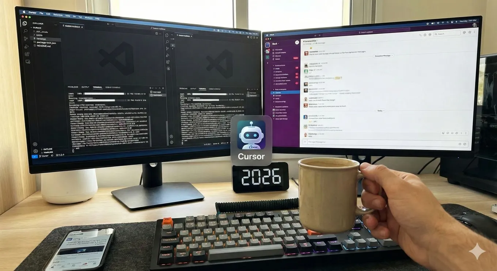

Coding in parallel with Cursor
Originally posted on LinkedIn, February 11, 2026.
I start the morning by running two tasks in parallel in two Cursor windows. While Cursor works for me, I catch up on Slack messages.
Today I also added a new Key binding: Pull from master. Instead of clicking with the mouse every time, I can now press ctrl+m. I say I added it, but Cursor actually did the work after recommending the keyboard shortcut too.
I’m writing this while waiting for Cursor to write more code. Developing software in 2026 is a different world.
